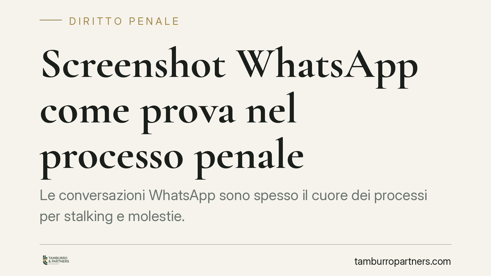

Screenshot WhatsApp come prova nel processo penale
Le conversazioni WhatsApp sono spesso il cuore dei processi per stalking e molestie. Ma uno screenshot prodotto dalla vittima ha valore in giudizio? La questione tocca due profili distinti: l'ingresso della prova nel processo e la sua concreta attendibilità. Chiarire la differenza è essenziale sia per chi denuncia sia per chi si difende.

Il contesto
Gran parte dei procedimenti per stalking (art. 612-bis c.p.) e per minacce o molestie ruota oggi attorno alle chat. La parte offesa deposita immagini delle conversazioni; la difesa dell'imputato eccepisce l'inutilizzabilità o la possibile alterazione. È un tema ricorrente, e la domanda è sempre la stessa: quello screenshot può fondare una condanna?
Una pronuncia di legittimità è stata di recente richiamata da fonti divulgative in senso favorevole all'acquisizione diretta di tali immagini. Segnaliamo però che il riferimento non risulta ad oggi verificabile nelle banche dati ufficiali: per correttezza evitiamo di attribuirle un numero e ancoriamo il discorso ai principi codicistici, che restano il riferimento sicuro.
Inquadramento normativo
Occorre tenere separati due piani.
Il primo è l'utilizzabilità: se la prova può entrare legittimamente nel processo. Lo screenshot è un documento e trova ingresso attraverso gli artt. 234 e 189 c.p.p., quest'ultimo dedicato alla prova atipica, cioè non espressamente disciplinata. La sua acquisizione non richiede, di per sé, né una perizia forense né il sequestro del telefono.
Un chiarimento sul sequestro. L'art. 254 c.p.p. disciplina il sequestro di corrispondenza presso chi fornisce servizi postali, telegrafici o telematici: è una misura che colpisce il flusso di comunicazioni presso il gestore. Lo screenshot che il destinatario stampa o fotografa dal proprio dispositivo è cosa diversa: la vittima non subisce alcun sequestro, ma produce spontaneamente un messaggio del quale è essa stessa destinataria. Le due ipotesi non vanno confuse.
Il secondo piano è il valore probatorio: quanto quella prova pesa. Qui opera l'art. 192 c.p.p., che impone al giudice una valutazione critica. Un documento acquisibile non è automaticamente decisivo: va vagliato per attendibilità, coerenza e riscontri.
Sul versante sostanziale, ricordiamo che l'art. 612-bis c.p. richiede condotte reiterate di minaccia o molestia che producano un perdurante stato d'ansia o di paura, un fondato timore per l'incolumità, oppure costringano la vittima ad alterare le proprie abitudini di vita. Non basta un singolo messaggio sgradevole: servono la ripetizione e uno degli eventi tipici.
Implicazioni pratiche
Per chi denuncia, il messaggio è duplice. Lo screenshot è ammissibile come prova documentale, ma non è a prova di contestazione: la sua forza dipende dalla completezza e dalla verificabilità di ciò che si produce. Immagini parziali, prive di date o di riferimenti al mittente, offrono un appiglio a chi le vuole mettere in discussione.
Per chi si difende, la strada non è invocare un'inutilizzabilità che di regola non sussiste, ma contestare in modo specifico l'autenticità. Una negazione generica non basta: occorre indicare elementi concreti che facciano dubitare della genuinità del contenuto (alterazioni, montaggi, discontinuità nella conversazione). Solo una contestazione circostanziata può giustificare accertamenti tecnici sul dispositivo.
La modalità di acquisizione e di presentazione della prova incide sulla sua tenuta processuale: un vaglio tecnico-difensivo prima della produzione consente di anticipare le obiezioni e di rafforzare — o smontare — il materiale.
Cosa fare in concreto
- Conserva la fonte originale. Non limitarti allo screenshot: mantieni il messaggio sul dispositivo, con metadati e cronologia intatti, così da consentire eventuali accertamenti successivi.
- Cattura la conversazione per intero. Includi date, orari, numero o contatto del mittente e i messaggi immediatamente precedenti e successivi, evitando estrapolazioni isolate.
- Documenta la reiterazione. Nei procedimenti ex art. 612-bis c.p. raccogli tutte le occorrenze nel tempo: è la ripetizione, non il singolo episodio, a integrare la fattispecie.
- Formula contestazioni specifiche. Se intendi mettere in dubbio l'autenticità, individua elementi concreti di alterazione: una negazione generica non produce effetti processuali.
- Valuta la strategia probatoria prima del deposito. Il modo in cui la prova viene acquisita e presentata ne condiziona la solidità: un esame tecnico preventivo aiuta a prevenire eccezioni.
Gli screenshot, dunque, entrano nel processo con relativa facilità. La partita si gioca sul terreno dell'attendibilità e della contestazione, dove contano il rigore nella raccolta e la precisione delle argomentazioni.
---
Contributo informativo a cura di Tamburro & Partners Avvocati - Avv. Giuseppe Tamburro. Non costituisce parere legale.
Ogni condominio ha una storia a sé.
Se gestisci un'amministrazione e vuoi un confronto su una specifica questione condominiale, scrivi allo studio. Ti rispondiamo entro un giorno lavorativo.